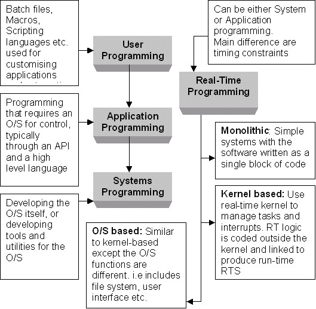

pkb contents
> programming | just under 1457 words | updated 11/08/2017
Programmer competencies matrix
-
Secondary memory
is persistant storage while the primary memory is emptied if ever power cuts out.
-
A program,
also called code, is instructions, also called algorithms, for a computer to follow. Programs may contain a single command or millions. Programs my be contained in a single file or many.
-
A compiler
performs a one-time conversion of code written in a high-level language to code written in machine-readable language. Once compiled, the program is executable, i.e., it can be run by the computer directly without an intermediary. The
interpreter
is this intermediary: it translates code in a high-level language to machine-readable commands dynamically.*
Explain each of the following using an example of a human capability
-
[ ] Central processing unit
-
[ ] Main Memory
-
[ ] Secondary Memory
-
[ ] Input Device
-
[ ] Output Device.
An algorithm is a step-by-step way of solving a problem. (1) The "steps" may be written as instructions for humans or for machines to follow. (2) There are many ways to solve a problem, so we need ways to evaluate and choose algorithms (the issues of algorithmic bias and algorithmic transparency).
-
Structured
-
Functional
-
Object-oriented
-
Literate

These practices are meant to (1) maintain code quality and (2) manage code as an asset:
Per Calvanese (2006), Wikibooks (n.d.), and SQA (2006):
-
Compiler generates error messages
for
-
syntax errors
that violate the basic rules of the language (invalid statements, usually fatal) and for
-
exceptions
that violate the rules for using statements (invalid operations; the "parser knows what to do with a piece of code but is unable to perform the action" [Wikibooks, n.d.]).
-
Human or debugger must identify
-
incorrect logic
that violates the program specification.
|
Types of programming errors
|
|
Syntax
|
Exceptions AKA semantic?
|
Logical
|
|
Static
|
Dynamic
|
|
Compile-time errors
|
Run-time errors
|
Defenses against programming errors
|
|
Knowledge
|
(in Python)
try ... except
|
Debugger
|
Per notes by Joseph Hellerstein at UW, debugging consists of:
|
Phase
|
Action
|
|
Detection of problem
|
Testing
|
|
Isolation of responsible code
|
Thought
|
Logging e.g. with
print
|
Debugging tool* e.g.
pdb
|
|
Resolution
|
(specific to problem)
|
* "I've probably used it a dozen times or so in five years of coding"
Similarly, Klahr and Carver (1988; referenced in Bransford et al., 2014, p. 60) describing debugging as "identifying the buggy behavior, representing the program, locating the bug in the program, and then correcting the bug".
Per Beck (2017), readability is important because good code must be:
-
Understandable
-
Reusable
(part of or alongside other code)
-
Fixable
-
Sustainable
(e.g. across versions of a language)
Style guides formalize conventions to support readability for a specific language --- things like naming conventions, line and character spacing, etc.
See: paper notes from DSSG 2017, Valentina Staneva's tutorial.
Per Beck (2017):
-
"For modules and packages, [the docstring should] list the classes, exceptions and functions (and any other objects) that are exported by the module, with a one-line summary of each."
-
"For functions and methods, the [docstring] should summarize its behavior and document its arguments, return value(s), side effects, exceptions raised"
-
"Wrong comments are bugs"
-
Inline comments are generally bad practice (i.e. avoid them with variable names, functions, etc.)
Important because:
-
Usage of other software, or other code within your code
-
Licensing your own code via GitHub
[graphic from lecture notes based on Mark Webbink's work]
(These notes are based on a lecture by Joseph Hellerstein at the University of Washington.)
-
'Programming is typically about 6-10% of the costs of software engineering'
See
planning a project
and
overview of PM methodologies
-
Assess needs
-
Design specifications
-
Design, develop, and test software*
-
Implement/deploy systems
-
Support operations (for servers in
cloud business models)
-
Evaluate performance
-
(iterate)
-
Communication (project initiation, requirements gathering)
-
Planning (estimating, scheduling, tracking)
-
Modeling (analysis, design)
-
Construction (code, test)
-
Deployment (delivery, support)
... failure of this approach (in most cases, with a few important exceptions) led to the Agile approach, c. 2000, because "you don't know all the details until you've done it":
-
Gather requirements from users (NB: identifying users should occur during
strategic justification of the project)
-
Develop outline specification
-
Sprint:
-
Rapid prototyping, with standup meetings throughout:
-
Design (lower level than outline specification)
-
Technology assessment (of existing technology and software, as both rivals and resources)
-
Implementation
-
Bug prioritization and resolution
-
Evaluation of prototype
-
(iterate; revise specification)
-
Deliver system
-
(continue to iterate)
... in the context of homework:
-
start with what you don't know, to uncover further unknowns (Rumsfeld's "unknown unknowns")
Common problems:
-
lack or rejection of shared standards
-
lack of coordination
Per Beck (2017):
Background:
-
Describe what the application does
-
Describe the role of the code being reviewed
Comment on:
-
Choice of variable and function names
-
Readability of the code
-
How improve reuse and efficiency
-
How use existing python packages
-
1-2 minutes
-
What you've done (information, accomplishment)
-
How it compares with what you intended (accountability, reflection)
-
What you want to do (planning, accountability)
-
Anticipated challenges (advice)
Address:
-
Need for technology
-
How it works
-
Why it would be useful
-
Drawbacks
Questions:
-
dependencies?
-
maintenance?
-
maintenance of dependencies?
-
open source
-
support
Research strategies:
-
check StackOverflow questions for activity
-
check GitHub repositories
-
no bugs (issues) means no users
-
no closed issues means no support
Bransford, J., Brown, A. & Cocking, R. (2000). Learning and transfer. In
How people learn: Brain, mind, experience, and school.
Washington, DC: The National Academies Press.
https://doi.org/10.17226/9854
Calvenese, D. (2006). Types of program errors. Retrieved from
http://www.inf.unibz.it/~calvanese/teaching/ip/lecture-notes/uni10/node2.html
Beck, D. (2017). Lecture at University of Washington.
Scottish Qualifications Authority (SQA). (2006). Types of program error. Retrieved from
https://www.sqa.org.uk/e-learning/SDPL03CD/page_04.htm
Wikibooks. (n.d.). Python_Programming/Errors. Retrieved from
https://en.wikibooks.org/wiki/Python_Programming/Errors